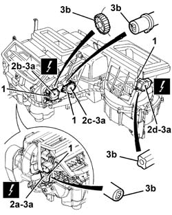

5040D88 control motor of any flap - r r with air conditioner casing removed
- Path
- Procedures > 50 AUXILIARY UNITS > 5040 AIR CONDITIONING CASING AND COMPONENTS > 5040D air conditioner controls > 5040D88 control motor of any flap - r r with air conditioner casing removed
- Kind
- repair procedure (removal / refitting; the operation number is the code)
- Applies to
- all engines; all production periods
- Interactive page
- https://sloeber94.github.io/elrnDB-a156/en/#/3238353
Applies to: all engines; production: da 03/02 a 09/03, da 10/03; only with equipment: Air Conditioner
 Removing
Removing
 Refitting
Refitting1. Unscrew the motor retaining bolt.
2. Disconnect the electrical connections for the motor (2a, 2b, 2c, 2d).
 | Name | Connector |
|---|---|---|
2a | Left air mixture flap actuator |
| Name | Connector |
|---|---|---|
2b | Air distribution actuator |
| Name | Connector |
|---|---|---|
2c | Right air mixture flap actuator |
| Name | Connector |
|---|---|---|
2d | Air intake actuator |
3. Remove the motor (3a) releasing its connection (3b).

Applies to: all engines; production: da 03/02 a 09/03, da 10/03; only with equipment: Air Conditioner
Refitting
RemovingCheck that the motor is undamaged.
Position the motor attaching its connection.
Tighten the bolts fixing the motor.
Connect the motor electrical connections.